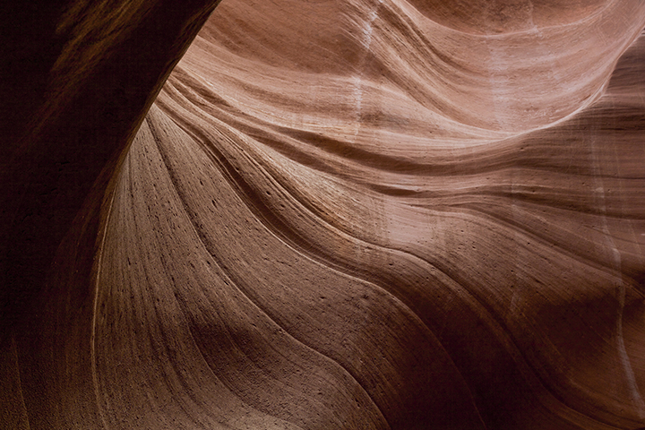

ABOUT US
Woven Magazine celebrates artists, designers, and entrepreneurs while exploring the history of design through travel.
THE STORIES
Search
See Films
See Stories
SHANTELL MARTIN |
ART
Well, ARE YOU?
Artist and educator Shantell Martin uses her work to ask the ultimate question of identity: Are you, YOU?
.12.30.19.
CRÉ NATURAL BUILDING|
ARCHITECTURE
Closer to Home
Bryce Ehrecke & Kelly Brown share how natural building could empower both a more beautiful and a more sustainable future.
.11.11.19.
ALISON CARROLL |
ENTREPRENEUR
Wonder Valley
Wonder Valley is a built around the essentials for cultivating a rich existence, with good food and good health for a good life.
.10.30.19.
JUSTIN CHUNG|
PHOTOGRAPHER
Faculty Department
Photographer Justin Chung’s project Faculty Department is an ode to the inspiration found in his subjects.
.10.21.19.
Future — Past
Woven Issue Four
Issue 4 explores the paradoxes at play in our world: death and rebirth, old and new, past and future. We take on a mindset of endless growth and the many catalysts we encounter in the creative process: setbacks, loss, imagination, and serendipity. From poetry to plants, this issue looks intently into the face of the immeasurable forces that propel us forward, and meditates on our role in designing the future.
JOEKENNETH MUSEAU |
The Journey of Departure
As a tribute to his mother and the pain of losing her to cancer, Joekenneth Museau writes about the depths of pain, and the heights of growth he’s experienced through healing.
.10.17.19.

PAGE, AZ |
LANDSCAPE
Antelope Canyon
Worn by wind and sand, these centuries old slot canyons are a sculpted masterpiece, such that only nature could reveal.
.10.11.19.
CODY COBB |
PHOTOGRAPHER
Eons of Earth
As a photographer and solo traveler, Cody Cobb elevates the grandeur of the natural world beyond the boundary of civilization.
.10.01.19.
JULIANNE AHN |
CERAMICS
Object & Totem
Ceramicist Julianne Ahn reflects on the meditative process of her work and how it taught her balance between seasons of life..
.09.25.19.
FEARTURED BLOG POSTS
Making Art in the Middle of Nowhere
Exploring a West Texas must-see, firmly planted at the crossroads of Art and Myth.
Celina Muire
Austin-based woodworker Celina Muire talks to us about process, pyrography, and the perfectly imperfect nature of making by hand.
Cookfire
A meal out-of-doors in Mt. Hood, OR with two of Portland’s finest foodies.
LA Juice Shop
Thoughts on juicing and the place to go for the best fresh, local, and organic beverages in West Hollywood.